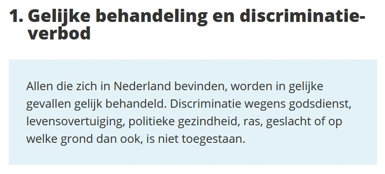

Gelijkheid

Januari 2021
De oorzaak van (on)gelijkheid zit in het verschil dat je maakt tussen jezelf en een ander. Je vindt iets van jezelf en je vindt iets van een ander, waardoor je jezelf afscheidt van die ander. Meestal vind je datgene wat jij denkt beter dan datgene wat die ander denkt. Soms is het andersom en leer je van die ander. Je reageert en oordeelt met je gedachten vanuit je eigen denkkader. Daarin weeg je je eigen kennis en belangen af en zo beredeneer je een uitkomst.
Door de verschillende denkkaders die jij en anderen hebben, hebben de redenaties ook verschillende uitkomsten, ook als je met dezelfde gedachte begint. Voor jou is jouw redenatie de waarheid, en dat is ook zo, vanuit jouw denkkader gezien. Maar dat geldt voor die ander ook. Daarbij maakt het niet uit hoe geleerd of complex je denkkader is. Het blijft een kader van waaruit je denkt dat je de waarheid beredeneerd.
Het is een enorme beperking, je eigen denkkader. Je vindt je eigen gedachten zo belangrijk dat je er volledig in opgeslokt wordt en niet ziet dat ze op een andere schaal van geen belang zijn. Je ziet niet dat er onmogelijke discussies ontstaan omdat je denkkader anders is dan iemand anders zijn denkkader. Je bent continu denkkaders van anderen aan het vergelijken, waardoor je ongelijkheid ervaart en verzandt in discussies met onoplosbare verschillen.
Dit verhaal kan je helpen je eigen denkkader te overstijgen en de gelijkheid tussen mensen te zien door je bewust te worden van de groep waar je onderdeel van uitmaakt. Hopelijk heb je even de tijd om het te lezen.
Waarom vind je gedachten zo belangrijk?
Door over jezelf te denken scheid je je af van anderen en 'denk' je iemand te zijn, een identiteit te zijn. Sommige mensen vinden zichzelf slim, andere vinden zichzelf grappig, weer andere vinden zichzelf mooi, sommige vinden zichzelf zorgzaam, andere vinden zichzelf een leider en er zijn mensen die zich creatief vinden. Je kunt alles van jezelf vinden, omdat je denkt vanuit een kader wat je zelf hebt geschapen. Zo creëer je een gouden kooi voor jezelf, je ego. Die identiteit wil je vasthouden en noem je 'ik'.
Hoe kun je dan toch samenleven?
In een samenleving is het onmogelijk je eigen denkkader in alle gevallen vol te houden. Je zou simpelweg met teveel andere denkkaders botsen. Dit is waarom je moet onthechten van je eigen denkkader om je bewust te worden van de groep waarin je samenleeft.
Als je onthecht van je ego zul je zien dat je onderdeel bent van een groep. Net zoals jouw individu een bewustzijn heeft, heeft de groep waar je deel van uitmaakt ook een bewustzijn. De groep is een eenheid op zichzelf. Net als jij is die groep er ook met een reden. Voor de ontwikkeling van de groep wordt de groep ook in situaties gebracht waar als groep op gereageerd en geoordeeld kan worden. De groep heeft ook een eigen denkkader. Naast je persoonlijke ontwikkeling is het net zo belangrijk om van deze groepsontwikkeling te leren en je daar ook weer van te onthechten. Om je vervolgens te realiseren dat die groep deel uitmaakt van een nog grotere groep.
Door te blijven onthechten van individuele- en groep denkkaders vergroot je je bewustzijn en ontwikkel je jezelf.
Wat is een groep?
Als eerste kun je kijken naar het gezin waar je in leeft. Hoe ga je in het gezin met elkaar om? Botsen jullie denkkaders? Wees je dan bewust dat jij het individu in het gezin bent, maar dat je het gezin ook als geheel kan zien. Het gezin als geheel met een eigen denkkader. Daarin zijn afspraken die voor iedereen gelden. Let op het woord 'iedereen', dat is van groot belang, de afspraken moeten gelden voor iedereen. Niemand in het gezin mag uitgezonderd worden, dan zou hij zich afgescheiden voelen. Als je het gezin als eenheid ziet, dan kan dat niet. Ook niemand in het gezin mag een voorkeursbehandeling krijgen, er is geen beter individu met een beter denkkader dan een ander. Als gezin opereer je als eenheid, met de bijbehorende dynamiek. Voor het gezin geef je je eigen identiteit op. Dat betekent niet dat je jezelf te kort doet, je verruimt je eigen bewustzijn juist. Je komt los van je ego denkkader en duikt in het gezin denkkader.
Hoe verhouden de groep en het individu zich tot elkaar?
Op het moment dat je je onthecht van je eigen identiteit, wordt je ook de groep. Het individu 'lost op' in de groep. Door onthechten verruimt je bewustzijn en overstijgt je bewustzijn het individu en 'begrijpt' het wat de groep nodig heeft. Dan kun je opereren als onderdeel van de groep EN als individu. Als gezin kun je bijvoorbeeld afspreken dat je gezamenlijk eet in de avond en dat iedereen daar altijd aan mee kan doen. Ook ontstaan er bepaalde gezinsrituelen zoals een filmavondje op zaterdagavond of een strandwandeling op zondagmiddag. Het denkkader van het gezin zorgt ervoor dat alles op rolletjes loopt.
In de groep ontstaat eenheid en gelijkheid doordat individuen vanuit het groep denkkader gaan denken. Dan denken ze ineens hetzelfde, er is geen afgescheidenheid. Terwijl de individuen toch ook hun eigen denkkaders behouden.
Totdat een individu aandacht nodig heeft. Wat dan? Stel een individu wordt ziek. Dan raakt het denkkader van het gezin in de war. De gezinstaken van het individu kunnen niet meer uitgevoerd worden. En hier is het van belang om te begrijpen dat het gezin niet kan helpen. Het gezin kan dit niet oplossen, want het gezin was voor iedereen, zonder uitzondering. Het gezin kan zich niet richten op een individu. Dat betekent dat de andere individuen voor het ene individu moeten gaan zorgen. Dan komt hun persoonlijke ontwikkeling in een sneltrein vaart: de groep en het individu zorgen voor zichzelf en de individuen zorgen voor elkaar. Ze werken vanuit verschillende gezichtspunten aan zichzelf.
Er is één spelregel in de groep. De wetten en regels van een groep gelden voor alle individuen, zonder uitzondering, ze mogen geen individuen, of groepen mensen, binnen die groep discrimineren en afscheiden. Dat is de basis voor gelijkheid.
Soms bemoeit een groep zich wel met een individu, waardoor er onrust en onvrede in de denkramen van andere individuen kunnen optreden. Het lijkt bijvoorbeeld goed om bepaalde individuen te beschermen, armen, zieken of andersoortige behoeftigen, maar dat is niet de taak van de groep. De groep moet zorgen voor iedereen en iedereen evenveel afnemen en toebedelen. Daardoor krijgen de individuen in de samenleving de kans voor elkaar te zorgen als iemand iets ontbreekt. Als iemand arm of ziek is, dan kan iemand anders zich daarover ontfermen. Zo heeft de groep en het individu zijn eigen rol en bemoeien ze zich niet met elkaar.
Een actueel voorbeeld
In Nederland leven we met ruim 17 miljoen mensen samen. Dat is ook een groep, een grotere groep dan een gezin, maar dezelfde principes gelden hier. Ook hier moeten individuen zich onthechten van hun eigen denkkader om tot besef van het geheel te komen en het handelen van de groep te begrijpen. Het denkkader in Nederland is vastgelegd in wetten. Individuen hebben daar indirect sturing in doordat ze tot op zekere hoogte kunnen kiezen wie het land besturen.
Voor het individu in de Nederlandse samenleving geldt dat die zich moet onthechten van zijn eigen denkkader om te kunnen begrijpen wat voor Nederland goed zou zijn. Maar dit geldt dus ook voor het bestuur in Nederland. Ook die moeten zich onthechten van hun eigen denkkader om in het algemeen belang te besturen.
De wetten en regels die op dit niveau gelden zouden in het belang van iedereen moeten zijn. Zoals vrijheid van meningsuiting, voor iedereen, niemand uitgezonderd. De eenheid 'Nederland' kan niet zeggen dat bepaalde individuen, of groepen mensen, beter zijn dan anderen. Iedere individu is even belangrijk vanuit het geheel bekeken. In de grondwet is dat ook opgenomen als recht op gelijke behandeling en het discriminatieverbod.

Die gelijke behandeling is de belangrijkste regel, maar wordt zo vaak geschonden dat het lijkt alsof er geen enkele eenheid in Nederland bestaat. Vanwege de vele individuele denkramen met allemaal hun eigen mening en voorkeuren ontstaat er continu discussie. Er lijkt totaal geen algemeen belang meer te zijn, maar juist worden regels opgesteld voor individuen of groepen individuen. Diegene die het hardste roept krijgt vaak net iets anders dan diegene die dat niet doet en zo sluipt de ongelijkheid en afgescheidenheid in het systeem.
In het kader van de actuele coronamaatregelen werkt het daarom ontwrichtend als groepen mensen worden aangesproken. Bijvoorbeeld 'de horeca moet dicht' of 'we moeten voor de ouderen zorgen' of het begrip 'vitale beroepen'. Dat is discriminerend en kan op allerlei manieren uitgelegd worden, afhankelijk van het denkkader van het individu. Als er bijvoorbeeld gesproken wordt van 'vitale beroepen', dan is er sprake van discriminatie van mensen in die beroepen of buiten die beroepen en wordt het belang van de groep niet goed behartigd. Er zijn geen vitale beroepen, of ze zijn allemaal vitaal. Als er in een samenleving een onderdeel hapert, dan hapert de hele samenleving. De coronamaatregelen moeten iedereen aanspreken om het gewenste groepseffect te hebben, niemand uitgezonderd, 'iedereen een mondkapje in een publiek gebouw', dat begrijpt iedereen, of het nu wel of niet in het persoonlijk denkkader past. Individuen worden dan in ieder geval niet gediscrimineerd, maar als onderdeel van het geheel behandeld.
De enige manier om als Nederland het groepsbewustzijn te vergroten en te leren van een situatie zoals het coronavirus die doet ontstaan is als we vanuit gelijkheid het land gaan organiseren en besturen. Er zijn geen verschillen tussen Nederlanders, het ene bedrijf is niet belangrijker dan het andere bedrijf, de ene persoon is niet belangrijker dan de andere persoon. Als er iemand moet inleveren, dan moet iedereen inleveren. En als iemand iets toebedeeld krijgt, dan moet iedereen dat krijgen. En als jij als individu dat niet vindt, dan kun jij zelf andere individuen helpen. Vind jij het niet nodig dat je wat krijgt, omdat je al genoeg hebt? Geef het dan weg! Help iemand anders daarmee. Dat is goed voor de groep en voor jezelf. Nederland zorgt voor ons allemaal en wij zorgen voor elkaar.
Gelijkheid is de enige manier om de samenleving te bekijken. Er is maar één denkraam voor Nederland. Probeer niet jouw denkraam te projecteren op dat groep denkraam, maar jij als individu met jouw mening en jouw denkraam, kan wel andere individuen helpen.
Een grote stap
In dit verhaal gaat het om persoonlijk bewustzijn, groep bewustzijn en de relatie tussen jouw individu en de groep. Je kunt dit ook vertalen in termen van karma. Het is niet alleen je persoonlijk karma waar je mee geconfronteerd wordt in je leven, het is ook groepskarma wat je maakt wie je bent. Het is dus niet alleen je persoonlijke ontwikkeling die jou vooruit helpt, maar ook de groepsontwikkeling helpt jou verder. Net zoals je in meditatie je persoonlijk karma onder ogen kunt zien, kun je ook de groepskarma onder ogen zien en daarvan leren. Het is dus van belang voor jezelf om ook op groepsniveau jezelf te ontwikkelen en ook op grotere schaal juist te handelen.
Kun je iets persoonlijk niet oplossen, botst dat met denkramen van anderen? Ontrek je dan eens van je persoon en bekijk het vanuit een groter geheel, vanuit de groep waarvoor het opgelost moet worden. Hopelijk kun je nu op een andere manier naar gebeurtenissen kijken die de wereld aangaan en daar een persoonlijke ontwikkeling mee doormaken.
Hoe groot is jouw denkkader?
Ieder individu heeft zijn eigen denkkader. De vraag is in welke mate jij je van je persoonlijke denkkader kan onthechten om op te stijgen naar grotere hoogte. Kun jij onthechten van je ego?
Iedere groep heeft ook zijn eigen denkkader. Kun je je individualiteit opgeven en in een gezin opereren? Misschien kan je verder en je persoonlijk belang ondergeschikt maken aan het belang van het dorp of de stad waarin je leeft. Zie je het belang daarvan? Zijn er beslissingen die je kunt nemen die ten koste lijken te gaan van je persoonlijke woonomgeving, maar het leven voor je buren aangenamer maken? Kun je je ook onthechten van je stad en het belang van de Nederlandse samenleving begrijpen? Kun je op dat niveau zien wat goed is voor alle mensen in Nederland?
Nederland is ook weer een onderdeel van een grotere eenheid, Europa, wat weer onderdeel is van deze aarde. Kun je het belang van de aarde voorop stellen? Voor alle individuen die daar op leven, niet alleen mensen, maar alle wezens?
Als je je bewust wordt van grotere groepen, dan kun je op een andere schaal naar de dingen kijken. Je kijkt niet meer vanuit je persoonlijk denkkader, maar vanuit het groep denkkader. Dan kun je bijvoorbeeld vanuit het perspectief van de aarde groep naar het coronavirus kijken. Zie je dat het coronavirus net als jij onderdeel van de wezens op aarde is? Zie je dat de manier waarop het virus jouw lichaam gebruikt om te overleven hetzelfde is als jij de aarde gebruikt om te overleven?
Het is de vraag hoever jij je kunt onthechten van je ego en persoonlijkheid om te zien tot welke groep je behoort? De aarde is ook nog maar een klein onderdeeltje van het hele heelal. Uiteindelijk zul je door het beoefenen van yoga en meditatie er achter komen dat je onderdeel bent van het leven zelf. Waarin jij het individu bent, met een rol in de eenheid van het leven zelf. Het leven dat alles wat 'is' omvat. Het leven discrimineert niet, alles doet mee, niets uitgezonderd.
Lees meer BOE blogs
Neem contact op
Ga naar www.bamboehuis.amsterdam